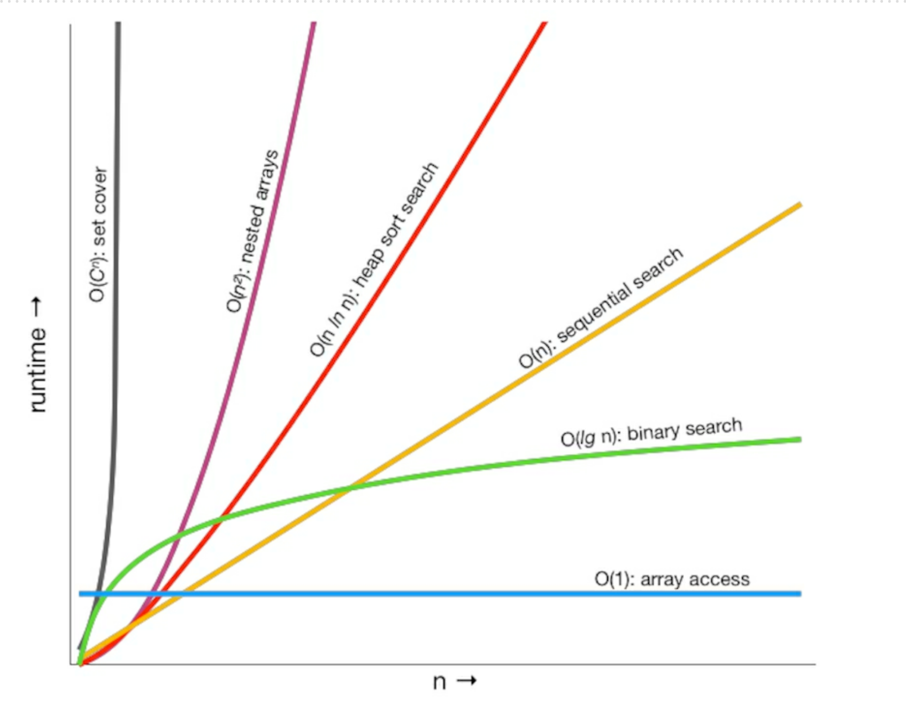

Pragmatic programmer
1 A Pragmatic Philosophy
1 It’s Your Life
It is your life. You own it. You run it. You create it. Many developers we talk to are frustrated. Their concerns are varied. Some feel they’re stagnating in their job, others that technology has passed them by. Folks feel they are underappreciated, or underpaid, or that their teams are toxic. Maybe they want to move to Asia, or Europe, or work from home. And the answer we give is always the same. And the answer we give is always the same. Why can’t you change it?
Does your work environment suck? Is your job boring? Try to fix it. But don’t try forever. As Martin Fowler says, "you can change your organization or change your organization."
2 The Cat Ate My Source Code
Team Trust - is absolutely essential for creativity and collaboration according to the research literature [e.g. ( research) [https://psycnet.apa.org/doiLanding?doi=10.1037%2Fapl0000110]. In a healthy environment based in trust, you can safely speak your mind, present your ideas, and rely on your team members who can in turn rely on you.
Take Responsibility - When you do accept the responsibility for an outcome, you should expect to be held accountable for it. When you make a mistake (as we all do) or an error in judgment, admit it honestly and try to offer options. It is up to you to provide solutions, not excuses.
Before you approach anyone to tell them why something can’t be done, is late, or is broken, stop and listen to yourself. Talk to the rubber duck on your monitor, or the cat. Does your excuse sound reasonable, or stupid? How’s it going to sound to your boss? Run through the conversation in your mind. What is the other person likely to say? Will they ask, "Have you tried this…" or "Didn’t you consider that?" How will you respond? Before you go and tell them the bad news, is there anything else you can try? Sometimes, you just know what they are going to say, so save them the trouble.
explain what can be done to salvage the situation
- refactoring
- prototyping
- better testing
- automation
- additional resources
- more time with user
- maybe time for learning some technique or technology in greater depth?
3 Software Entropy
Entropy is a term from physics that refers to the amount of "disorder" in a system. it might be called, by the more optimistic term, "technical debt," with the implied notion that they’ll pay it back someday. They probably won’t.
In inner cities, some buildings are beautiful and clean, while others are rotting hulks. Why? Researchers in the field of crime and urban decay discovered a fascinating trigger mechanism, one that very quickly turns a clean, intact, inhabited building into a smashed and abandoned derelict.[5] A broken window. One broken window, left unrepaired for any substantial length of time, instills in the inhabitants of the building a sense of abandonment—a sense that the powers that be don’t care about the building. So another window gets broken. People start littering. Graffiti appears. Serious structural damage begins. In a relatively short span of time, the building becomes damaged beyond the owner’s desire to fix it, and the sense of abandonment becomes reality. Why would that make a difference? Psychologists have done studies[6] that show hopelessness can be contagious. Think of the flu virus in close quarters. Ignoring a clearly broken situation reinforces the ideas that perhaps nothing can be fixed, that no one cares, all is doomed; all negative thoughts which can spread among team members, creating a vicious spiral.
Tip 5 Don’t Live with Broken Windows
Don’t leave "broken windows" (bad designs, wrong decisions, or poor code) unrepaired. Fix each one as soon as it is discovered. If there is insufficient time to fix it properly, then board it up. Perhaps you can comment out the offending code, or display a "Not Implemented" message, or substitute dummy data instead. Take some action to prevent further damage and to show that you’re on top of the situation. We’ve seen clean, functional systems deteriorate pretty quickly. You may be thinking that no one has the time to go around cleaning up all the broken glass of a project. If so, then you’d better plan on getting a dumpster, or moving to another neighborhood. Don’t let entropy win.
4 Stone Soup and Boiled Frogs
Stone soup - allegory to the soldiers coming back from war stopping at village hoping for some food. Villagers didn't want to share the food. The soldiers boiled a pot of water and carefully placed three stones into it. The amazed villagers came out to watch. Once villagers started to seeing what's happening one by one get more interested and ask about it, in return they hear from soldiers. "The stone soup is good as it is, but some say it tests better when we add X" which cause villagers to start to share their supply with soldiers. Eventually they had produced a large pot of steaming soup. The soldiers removed the stones, and they sat down with the entire village to enjoy the first square meal any of them had eaten in months.
The soldiers act as a catalyst, bringing the village together, so they can jointly produce something that they couldn’t have done by themselves—a synergistic result. Eventually everyone wins.
Tip 6 Be a Catalyst for Change
Work out what you can reasonably ask for. Develop it well. Once you’ve got it, show people, and let them marvel. Then say "of course, it would be better if we added…" Pretend it’s not important. Sit back and wait for them to start asking you to add the functionality you originally wanted. People find it easier to join an ongoing success. Show them a glimpse of the future, and you’ll get them to rally around.
boiled frog - that if you take a frog and drop it into boiling water, it will jump straight back out again. However, if you place the frog in a pan of cold water, then gradually heat it, the frog won’t notice the slow increase in temperature and will stay put until cooked. The frog just doesn't notice the change.
Don’t be like the fabled frog. Keep an eye on the big picture. Constantly review what’s happening around you, not just what you personally are doing.
5 Good-Enough Software
The scope and quality of the system you produce should be discussed as part of that system’s requirements.
Great software today is often preferable to the fantasy of perfect software tomorrow. If you give your users something to play with early, their feedback will often lead you to a better eventual solution (Tracer Bullet).
6 Your Knowledge Portfolio
Managing a knowledge portfolio is very similar to managing a financial portfolio:
- Serious investors invest regularly—as a habit.
- Diversification is the key to long-term success.
- Smart investors balance their portfolios between conservative and high-risk, high-reward investments.
- Investors try to buy low and sell high for maximum return.
- Portfolios should be reviewed and rebalanced periodically.
Goals:
- Learn at least one new language every year
- Read a technical book each month
- Read nontechnical books, too
- Take classes
- Participate in local user groups and meetups
- Experiment with different environments
- Stay current
Tip 10 Critically Analyze What You Read and Hear
A favorite consulting trick: ask "why?" at least five times. Ask a question, and get an answer. Dig deeper by asking "why?" Repeat as if you were a petulant four-year old (but a polite one). You might be able to get closer to a root cause this way.
- Who does this benefit? It may sound cynical, but follow the money can be a very helpful path to analyze. The benefits to someone else or another organization may be aligned with your own, or not.
- What’s the context? Everything occurs in its own context, which is why "one size fits all" solutions often don’t. Consider an article or book touting a "best practice." Good questions to consider are best for "who?" What are the prerequisites, what are the consequences, short and long term?
- When or Where would this work? Under what circumstances? Is it too late? Too early? Don’t stop with first-order thinking (what will happen next), but use second-order thinking: what will happen after that?
- Why is this a problem? Is there an underlying model? How does the underlying model work?
7 Communicate!
Treat English (or whatever your native tongue may be) as just another programming language. Write natural language as you would write code: honor the DRY principle, ETC, automation, and so on. (We discuss the DRY and ETC design principles in the next chapter.)
Know Your Audience - By making the appropriate pitch to each group, you’ll get them all excited about your project. As with all forms of communication, the trick here is to gather feedback. Don’t just wait for questions: ask for them. Look at body language, and facial expressions. One of the Neuro Linguistic Programming presuppositions is "The meaning of your communication is the response you get." Continuously improve your knowledge of your audience as you communicate.
Know What You Want to Say Fiction writers often plot out their books in detail before they start, but people writing technical documents are often happy to sit down at a keyboard, enter:
1. Introduction
Plan what you want to say. Write an outline. Then ask yourself, "Does this communicate what I want to express to my audience in a way that works for them?" Refine it until it does.
Choose Your Moment Catch a manager who’s just been given a hard time by her boss because some source code got lost, and you’ll have a more receptive listener to your ideas on source code repositories. Make what you’re saying relevant in time, as well as in content. Sometimes all it takes is the simple question, "Is this a good time to talk about…?"
Make It Look Good Too many developers (and their managers) concentrate solely on content when producing written documents. We think this is a mistake. Any chef (or watcher of the Food Network) will tell you that you can slave in the kitchen for hours only to ruin your efforts with poor presentation. There is no excuse today for producing poor-looking printed documents.
Involve Your Audience If possible, involve your readers with early drafts of your document. Get their feedback, and pick their brains. You’ll build a good working relationship, and you’ll probably produce a better document in the process.
Be a Listener There’s one technique that you must use if you want people to listen to you: listen to them. Even if this is a situation where you have all the information, even if this is a formal meeting with you standing in front of 20 suits—if you don’t listen to them, they won’t listen to you. Encourage people to talk by asking questions, or ask them to restate the discussion in their own words. Turn the meeting into a dialog, and you’ll make your point more effectively. Who knows, you might even learn something.
Get Back to People Always respond to emails and voicemails, even if the response is simply "I’ll get back to you later". communicate. The more effective that communication, the more influential you become.
Keep code and documentation together Writing documentation can be made easier by not duplicating effort or wasting time, and by keeping documentation close at hand—in the code itself. In fact, we want to apply all of our pragmatic principles to documentation as well as to code.
It’s easy to produce good-looking documentation from the comments in source code, and we recommend adding comments to modules and exported functions to give other developers a leg up when they come to use it. Restrict your non-API commenting to discussing why something is done, its purpose and its goal. The code already shows how it is done, so commenting on this is redundant—and is a violation of the DRY principle.
Online Communication tips
Our tips are simple:
- Proofread before you hit SEND.
- Check your spelling and look for any accidental autocorrect mishaps.
- Keep the format simple and clear.
- Keep quoting to a minimum.
- No one likes to receive back their own 100-line email with "I agree" tacked on. If you’re quoting other people’s email, be sure to attribute it, and quote it inline (rather than as an attachment). Same when quoting on social media platforms.
- Don’t flame or act like a troll unless you want it to come back and haunt you later. If you wouldn’t say it to someone’s face, don’t say it online.
- Check your list of recipients before sending. It’s become a cliché to criticize the boss over departmental email without realizing that the boss is on the cc list. Better yet, don’t criticize the boss over email.
As countless large corporations and politicians have discovered, email and social media posts are forever. Try to give the same attention and care to email as you would to any written memo or report.
2 A Pragmatic Approach
The Essence of Good Design
Tip 14 Good Design Is Easier to Change Than Bad Design
ETC - easier to change - principle every design principle out there is a special case of ETC. Why is decoupling good? Because by isolating concerns we make each easier to change. ETC. Why is the single responsibility principle useful? Because a change in requirements is mirrored by a change in just one module. ETC. Why is naming important? Because good names make code easier to read, and you have to read it to change it. ETC!
ETC Is a Value, Not a Rule
Deliberately ask yourself "did the thing I just did make the overall system easier or harder to change?" Do it when you save a file. Do it when you write a test. Do it when you fix a bug. It assumes that a person can tell which of many paths will be easier to change in the future. Much of the time, common sense will be correct, and you can make an educated guess. If you're still not sure which is the best solution, you can:
- Try to make the code you write replaceable
- treat this as a way to develop instincts.Note the situation in your engineering day book: the choices you have, and some guesses about change. Leave a tag in the source. Then, later, when this code has to change, you’ll be able to look back and give yourself feedback. It might help the next time you reach a similar fork in the road.
9 DRY - The Devils of Duplication
Most people assume that maintenance begins when an application is released, that maintenance means fixing bugs and enhancing features. We think these people are wrong. Programmers are constantly in maintenance mode. Our understanding changes day by day. New requirements arrive and existing requirements evolve as we’re heads-down on the project. Perhaps the environment changes. Whatever the reason, maintenance is not a discrete activity, but a routine part of the entire development process.
We feel that the only way to develop software reliably, and to make our developments easier to understand and maintain, is to follow what we call the DRY principle:
DRY - Don't Repeat Yourself - Every piece of knowledge must have a single, unambiguous, authoritative representation within a system.
Don’t copy-and-paste lines of source is only a part of DRY.
DRY is about the duplication of knowledge, of intent. It’s about expressing the same thing in two different places, possibly in two totally different ways.
Here’s the acid test: when some single facet of the code has to change, do you find yourself making that change in multiple places, and in multiple different formats? Do you have to change code and documentation, or a database schema and a structure that holds it, or…? If so, your code isn’t DRY.
Not All Code Duplication Is Knowledge Duplication
Not All Code Duplication Is Knowledge Duplication As part of your online wine ordering application you’re capturing and validating your user’s age, along with the quantity they’re ordering. According to the site owner, they should both be numbers, and both greater than zero. So you code up the validations:
def validate_age(value):
validate_type(value, :integer)
validate_min_integer(value, 0)
def validate_quantity(value):
validate_type(value, :integer)
validate_min_integer(value, 0)
The code is the same, but the knowledge they represent is different. The two functions validate two separate things that just happen to have the same rules. That’s a coincidence, not a duplication.
1. DRY Violation in Documentation
Don't repeat the intent of the function in the comment. Try to write the function and names in a way that it's self expressing.
2. DRY Violation in Data
class Line {
Point start;
Point end;
double length;
}
we have duplication. The length is defined by the start and end points: change one of the points and the length changes. It’s better to make the length a calculated field:
class Line {
Point start;
Point end;
double length() {
return star.distanceTo(end);
}
}
It's OK to violate the DRY principle fo performance reasons. e.g. caching the data. Where possible, always use accessor functions to read and write the attributes of objects. It will make it easier to add functionality in the future.
All services offered by a module should be available through a uniform notation, which does not betray whether they are implemented through storage or through computation.
2. DRY Violation in Representation
Your code needs to know how to communicate with libraries, API or the schemas (e.g. error codes). The duplication here is that two things (your code and the external entity) have to have knowledge of the representation of their interface. Change it at one end, and the other end breaks. Some strategies: Duplication across internal API - look for tools that let you specify the API in some kind of neutral format. These tools will typically generate documentation, mock APIs, functional tests, and API clients, the latter in a number of different languages. Ideally the tool will store all your APIs in a central repository, allowing them to be shared across teams.
Duplication Across External APIs - Increasingly, you’ll find that public APIs are documented formally using something like OpenAPI.This allows you to import the API spec into your local API tools and integrate more reliably with the service. If you can’t find such a specification, consider creating one and publishing it. Not only will others find it useful; you may even get help maintaining it.
Duplication with Data Sources - Many data sources allow you to introspect on their data schema. This can be used to remove much of the duplication between them and your code. Rather than manually creating the code to contain this stored data, you can generate the containers directly from the schema. Many persistence frameworks will do this heavy lifting for you. There’s another option, and one we often prefer. Rather than writing code that represents external data in a fixed structure (an instance of a struct or class, for example), just stick it into a key/value data structure (your language might call it a map, hash, dictionary, or even object). On its own this is risky: you lose a lot of the security of knowing just what data you’re working with. So we recommend adding a second layer to this solution: a simple table-driven validation suite that verifies that the map you’ve created contains
Inter-developer Duplication - at the module level, the problem is more insidious. Commonly needed functionality or data that doesn’t fall into an obvious area of responsibility can get implemented many times over. We feel that the best way to deal with this is to encourage active and frequent communication between developers. Maybe run a daily scrum standup meeting. Set up forums (such as Slack channels) to discuss common problems. This provides a non-intrusive way of communicating—even across multiple sites—while retaining a permanent history of everything said. Appoint a team member as the project librarian, whose job is to facilitate the exchange of knowledge. Have a central place in the source tree where utility routines and scripts can be deposited. And make a point of reading other people’s source code and documentation, either informally or during code reviews. You’re not snooping—you’re learning from them. And remember, the access is reciprocal—don’t get twisted about other people poring (pawing?) through your code, either.
10 Orthogonality
"Orthogonality" is a term borrowed from geometry. Two lines are orthogonal if they meet at right angles, such as the axes on a graph. It's generalization of the geometric notion of perpendicularity. In computing, the term has come to signify a kind of independence or decoupling. Two or more things are orthogonal if changes in one do not affect any of the others.
We want to design components that are self-contained: independent, and with a single, well-defined purpose (what Yourdon and Constantine call cohesion in Structured Design: Fundamentals of a Discipline of Computer Program and Systems Design[YC79]). When components are isolated from one another, you know that you can change one without having to worry about the rest. As long as you don’t change that component’s external interfaces, you can be confident that you won’t cause problems that ripple through the entire system.
Two major benefits if you write orthogonal systems:
- increased productivity - It is easier to write relatively small, self-contained components than a single large block of code. Simple components can be designed, coded, tested, and then forgotten—there is no need to keep changing existing code as you add new code.
- reduced risk - Diseased sections of code are isolated. If a module is sick, it is less likely to spread the symptoms around the rest of the system. It is also easier to slice it out and transplant in something new and healthy.
Most developers are familiar with the need to design orthogonal systems, although they may use words such as modular, component-based, and layered to describe the process.
Orthogonality is closely related to the DRY principle. With DRY, you’re looking to minimize duplication within a system, whereas with orthogonality you reduce the interdependency among the system’s components. It may be a clumsy word, but if you use the principle of orthogonality, combined closely with the DRY principle, you’ll find that the systems you develop are more flexible, more understandable, and easier to debug, test, and maintain.
11 Reversibility
What you can do is make it easy to change. Hide third-party APIs behind your own abstraction layers. Break your code into components: even if you end up deploying them on a single massive server, this approach is a lot easier than taking a monolithic application and splitting it.
12 Tracer Bullets
the term tracer bullet development is used to visually illustrate the need for immediate feedback under actual conditions with a moving goal.
Tracer bullets work because they operate in the same environment and under the same constraints as the real bullets. They get to the target fast, so the gunner gets immediate feedback. And from a practical standpoint they’re a relatively cheap solution. Look for the important requirements, the ones that define the system. Look for the areas where you have doubts, and where you see the biggest risks. Then prioritize your development so that these are the first areas you code. Tracer code is not disposable: you write it for keeps. It contains all the error checking, structuring, documentation, and self-checking that any piece of production code has. It simply is not fully functional. However, once you have achieved an end-to-end connection among the components of your system, you can check how close to the target you are, adjusting if necessary. Once you’re on target, adding functionality is easy. Tracer development is consistent with the idea that a project is never finished: there will always be changes required and functions to add. It is an incremental approach.
The tracer code approach has many advantages:
- Users get to see something working early - your users will know they are seeing something immature. They won’t be disappointed by a lack of functionality; they’ll be ecstatic to see some visible progress toward their system.
- Developers build a structure to work in - it. If you have worked out all the end-to-end interactions of your application, and have embodied them in code, then your team won’t need to pull as much out of thin air. This makes everyone more productive, and encourages consistency.
- You have an integration platform - have an integration platform As the system is connected end-to-end, you have an environment to which you can add new pieces of code once they have been unit-tested.
- You have something to demonstrate
- You have a better feel for progress
Tracer Code versus Prototyping You might think that this tracer code concept is nothing more than prototyping under an aggressive name. There is a difference. With a prototype, you’re aiming to explore specific aspects of the final system. With a true prototype, you will throw away whatever you lashed together when trying out the concept, and recode it properly using the lessons you’ve learned. The tracer code approach addresses a different problem. You need to know how the application as a whole hangs together. You want to show your users how the interactions will work in practice, and you want to give your developers an architectural skeleton on which to hang code.
13 Prototypes and Post-it Notes
What sorts of things might you choose to investigate with a prototype?
- Anything that carries risk.
- Anything that hasn’t been tried before,
- Anything that is absolutely critical to the final system.
- Anything unproven, experimental, or doubtful.
- Anything you aren’t comfortable with.
You can prototype:
- Architecture
- New functionality in an existing system
- Structure or contents of external data
- Third-party tools or components
- Performance issues
- User interface design
Prototyping is a learning experience. Its value lies not in the code produced, but in the lessons learned. That’s really the point of prototyping.
How to Use Prototypes When building a prototype, what details can you ignore?
Correctness You may be able to use dummy data where appropriate.
Completeness The prototype may function only in a very limited sense, perhaps with only one preselected piece of input data and one menu item.
Robustness Error checking is likely to be incomplete or missing entirely. If you stray from the predefined path, the prototype may crash and burn in a glorious display of pyrotechnics. That’s okay.
Style Prototype code shouldn’t have much in the way of comments or documentation (although you may produce reams of documentation as a result of your experience with the prototype).
14 Domain Languages
We always try to write code using the vocabulary of the application domain (see Maintain a Glossary). In some cases, Pragmatic Programmers can go to the next level and actually program using the vocabulary, syntax, and semantics—the language—of the domain. E.g. Cucumber is programming-language neutral way of specifying tests. You run the tests using a version of Cucumber appropriate to the language you’re using. In order to support the natural-language like syntax, you also have to write specific matchers that recognize phrases and extract parameters for the tests.
15 Estimating
| Duration | Quote estimate in |
|---|---|
| 1-15 days | Days |
| 3-6 weeks | Weeks |
| 8-20 weeks | Months |
| 20+ weeks | Think hard before giving an estimate |
Where Do Estimates Come From? Ask someone who’s already done it. Before you get too committed to model building, cast around for someone who’s been in a similar situation in the past. See how their problem got solved.
Understand What’s Being Asked You need to have a grasp of the scope of the domain. Often this is implicit in the question, but you need to make it a habit to think about the scope before starting to guess. Often, the scope you choose will form part of the answer you give: "Assuming there are no traffic accidents and there’s gas in the car, I should be there in 20 minutes."
Build a Model of the System From your understanding of the question being asked, build a rough-and-ready bare-bones mental model. Building the model introduces inaccuracies into the estimating process. This is inevitable, and also beneficial. You are trading off model simplicity for accuracy. Doubling the effort on the model may give you only a slight increase in accuracy. Your experience will tell you when to stop refining.
Break the Model into Components Once you have a model, you can decompose it into components. You’ll need to discover the mathematical rules that describe how these components interact. Sometimes a component contributes a single value that is added into the result. You’ll find that each component will typically have parameters that affect how it contributes to the overall model. At this stage, simply identify each parameter.
Give Each Parameter a Value Once you have the parameters broken out, you can go through and assign each one a value. You expect to introduce some errors in this step. The trick is to work out which parameters have the most impact on the result, and concentrate on getting them about right. Typically, parameters whose values are added into a result are less significant than those that are multiplied or divided.
Calculate the Answers A spreadsheet can be a big help. Then couch your answer in terms of these parameters. During the calculation phase, you get answers that seem strange. Don’t be too quick to dismiss them. If your arithmetic is correct, your understanding of the problem or your model is probably wrong. This is valuable information.
Keep Track of Your Estimating Prowess We think it’s a great idea to record your estimates, so you can see how close you were. If an overall estimate involved calculating sub-estimates, keep track of these as well. Often you’ll find your estimates are pretty good—in fact, after a while, you’ll come to expect this.
Estimating Project Schedules -Painting the Missile
"How long will it take to paint the house?" "Well, if everything goes right, and this paint has the coverage they claim, it might be as few as 10 hours. But that’s unlikely: I’d guess a more realistic figure is closer to 18 hours. And, of course, if the weather turns bad, that could push it out to 30 or more."
That’s how people estimate in the real world. Not with a single number (unless you force them to give you one) but with a range of scenarios.
What to Say When Asked for an Estimate
You say “I’ll get back to you.” You almost always get better results if you slow the process down and spend some time going through the steps we describe in this section. Estimates given at the coffee machine will (like the coffee) come back to haunt you.
3 The Basic Tools
As a developer you need to know the set of tools you should be using in your work to be efficient.
16 The Power of Plain Text
Keep Knowledge in Plain Text
Plain text doesn’t mean that the text is unstructured; HTML, JSON, YAML, and so on are all plain text. So are the majority of the fundamental protocols on the net, such as HTTP, SMTP, IMAP, and so on. And that’s for some good reasons:
- Insurance against obsolescence - human-readable (and human understandable!) forms of data and self-describing data will outlive all other forms of data and the applications that created them.
- Leverage existing tools - virtually every tool can work with plain text
- Easier testing
17 Shell Games
Every programmer needs to manipulate files of text for that purpose we should learn command shell. From the shell prompt you can invoke your full repertoire of tools, using pipes, to combine them in ways never dreamt of by their original developers. From shell, you can launch applications, debuggers, browsers, editors and utilities. You can search for files, query the status of the system and filter output.
If you can do everything inside your IDE with UI why would you need it? A benefit of GUI is WYSIWYG - What You See Is What You Get. The disadvantage is WYSIAYG - What You See Is All You Get.
Tip 26 Use the power of Command Shells
Make sure to configure and customize shell to your needs:
- setting color themes
- configuring a prompt
- aliases and shell functions
- command completion
18 Power Editing
Achieve Editor Fluency
Here’s the challenge list (without using mouse/trackpad):
- When editing text, move and make selections by character, word, line, and paragraph.
- When editing code, move by various syntactic units (matching delimiters, functions, modules, …).
- Reindent code following changes.
- Comment and uncomment blocks of code with a single command.
- Undo and redo changes.
- Split the editor window into multiple panels, and navigate between them.
- Navigate to a particular line number.
- Sort selected lines.
- Search for both strings and regular expressions, and repeat previous searches.
- Temporarily create multiple cursors based on a selection or on a pattern match, and edit the text at each in parallel.
- Display compilation errors in the current project.
- Run the current project’s tests.
19 Version Control
Always Use Version Control - not only for code repositories. For Everything: notes, prototype, configuration, system settings
20 Debugging
Embrace the fact that debugging is just problem-solving and attack it as such.
A debugging mindset
- don't panic, think about what could be causing the symptoms that you believe indicate a bug.
- Before you start to look at the bug make sure that you are working on code that built cleanly - without warnings.
- gather all relevant data
- talk/interview to reported, go together though the issue if you can't reproduce it.
Debugging Strategies
- Failing Test Before Fixing Code
- Read the Damn Error Message!
- Make sure that you also see incorrect value in the debugger
- Jot down notes, when you find a clue and chase it down only to find it didn't pan out - it would be easier to come back to where you were before.
- If it is an input values problem recreate it on full list and start chopping it.
- Use the Binary Chop when going through stack trace to find the root of the issue
- Use logging
- Talk to rubber Duck
- Use Process of Elimination - if you changed one thing which looks not related to the problem at glance, double check it because you might be wrong.
- Don't assume, prove it.
- Make sure it won't repeat. Fix Unit Tests, mend them, analyze the data, check other places in the code where it can happen.
21 Text manipulation
Learn a Text Manipulation Language. On Linux (or Mac) users often use tools such as awk and sed. Sometimes Python, Ruby, Perl. Ruby and Python were used to create a pragmatic Programmer book:
- Building the book - the build system for the bookshelf is written in Ruby. Authors, editors, layout people and support folk use Rake tasks to coordinate the building of PDFs and ebooks.
- Code inclusion and highlighting - the source codes examples in books are taken from repository to follow the DRY principle.
- Website update - simple script that does a partial book build, extracts the table of contents, then uploads it to the book's page on our website.
- Including equations - Python script that converts LaTeX math markup into formatted text.
- Index Generation - indexes are created as separate documents. Ruby script collates and formats the entries.
22 Engineering Daybooks
We use daybooks to take notes in meetings, to jot down what we’re working on, to note variable values when debugging, to leave reminders where we put things, to record wild ideas, and sometimes just to doodle.
The daybook has three main benefits:
- It is more reliable than memory. People might ask “What was the name of that company you called last week about the power supply problem?” and you can flip back a page or so and give them the name and number.
- It gives you a place to store ideas that aren’t immediately relevant to the task at hand. That way you can continue to concentrate on what you are doing, knowing that the great idea won’t be forgotten.
- It acts as a kind of rubber duck (described here). When you stop to write something down, your brain may switch gears, almost as if talking to someone—a great chance to reflect. You may start to make a note and then suddenly realize that what you’d just done, the topic of the note, is just plain wrong. There’s an added benefit, too. Occasionally you can look back at what you were doing oh-so-many-years-ago and think about the people, the projects, and the awful clothes and hairstyles.
4 Pragmatic Paranoia
Tip 36 you can't write perfect software
Perfect software doesn't exist, don't waste time and energy chasing an impossible dream. How to turn it into an advantage?
If you think that someone code might not live up to your standards, don't trust your code either - no one writes perfect code.
23 Design by Contract
DBC - Design By Contract - technique that focuses on documenting the rights and responsibilities of software modules to ensure program correctness. What is correct program? One that does no more and no less than it claims to do. Documenting and verifying that claim is the role of DBC.
Every function does something - Before it starts doing something it might have expectations of the state, and also it can modify that state. These expectations and claims are:
- Pre-conditions - what must be true in order for the function to be called (it's the caller responsibility to pass good data)
- Post-conditions - what function is guaranteed to do. - the state when the function is done.
- Class invariants / state - class ensures that this condition is always true from the perspective of a caller.
So the contract between the caller and module is: If all function’s preconditions are met by the caller, the function shall guarantee that all post conditions and invariants will be true when it completes.
If something is not as in contract the remedy is to raise exception.
Or Even better disable the possibility to call the function with wrong values.
E.g. on Android you can use @StringRes which indicates that the Int value needs to come from android resources.
Be strict in what you will accept before you begin, promise as little as possible in return.
Implementing DBC
Simply enumerating what the input domain range is, what the boundary conditions are, and what the
routine promises to deliver.
Assertions you can get much greater benefit by having the compiler check your contract for you. You can partially emulate this in some languages by using assertions: runtime checks for logical conditions.
Who is responsible for checking the preconditions, the caller or the method being called?
When DBC is implemented by the language - neither. it's tested behind the scene after caller invokes the method but
before the mother runs. If there is any explicit checking of parameters to be done, it must be performed by the caller
because the method will
never see parameters that violate its precondition.
For non-supporting DBC languages you need to bracket the called method with preamble and/or post-amble that checks these
assertions.
Consider a program that reads a number from the console, calculates its square root (by calling sqrt), and prints the result. The sqrt function has a precondition—its argument must not be negative. If the user enters a negative number at the console, it is up to the calling code to ensure that it never gets passed to sqrt. This calling code has many options: it could terminate, it could issue a warning and read another number, or it could make the number positive and append an i to the result returned by sqrt. Whatever its choice, this is definitely not sqrt’s problem. By expressing the domain of the square root function in the precondition of the sqrt routine, you shift the burden of correctness to the caller—where it belongs. You can then design the sqrt routine secure in the knowledge that its input will be in range.
Crashing Early gives you possibility to report more accurate information about the problem.
24 Dead Programs Tell No Lies
Catch and release is for fish
avoid using try-catch to catch all possible errors.
- The application code isn't eclipsed by the error code.
- The code is less coupled. If the writer of the method adds another exception our code is subtly out of date. Without try catch it's propagated.
same—when your code discovers that something that was supposed to be impossible just happened, your program is no longer viable. Anything it does from this point forward becomes suspect, so terminate it as soon as possible.
25 Assertive Programming
Tip 39 Use Assertions to prevent the impossible
In the Java implementation, you can (and should) add a descriptive string:
assert result! = null && result.size() > 0 : "Empty result from XYZ";
Don’t use assertions in place of real error handling. Assertions check for things that should never happen. Your first line of defense is checking for any possible error, and your second is using assertions to try to detect those you’ve missed.
26 Hot to Balance Resources
The function that allocates a resource should be responsible for deallocating it. Deallocate resources with LIFO principle. When allocating the same set of resource in different places in your code, always allocate them in the same order to avoid deadlock.
There are times when the basic resource allocation pattern just isn’t appropriate. Commonly this is found in programs that use dynamic data structures. One routine will allocate an area of memory and link it into some larger structure, where it may stay for some time.
The trick here is to establish a semantic invariant for memory allocation. You need to decide who is responsible for data in an aggregate data structure. What happens when you deallocate the top-level structure? You have three main options:
- The top-level structure is also responsible for freeing any substructures that it contains. These structures then recursively delete data they contain, and so on.
- The top-level structure is simply deallocated. Any structures that it pointed to (that are not referenced elsewhere) are orphaned.
- The top-level structure refuses to deallocate itself if it contains any substructures.
27 Don't Outrun Your Headlights
Tip 42 Always take small steps
Always take small, deliberate steps, checking for feedback and adjusting before proceeding. Consider that the rate of
feedback is your speed limit. You never take on a step or a task that’s “too big.”
What do we mean exactly by feedback?
Anything that independently confirms or disproves your action. For example:
- Results in a REPL provide feedback on your understanding of APIs and algorithms
- Unit tests provide feedback on your last code change
- User demo and conversation provide feedback on features and usability
What's a task that's too big? Any task that requires "fortune-telling". We can only see into the future perhaps one or two steps, maybe a few hours or days at most. From that you can quickly past educated guess into wild speculation. When the fortune-telling starts?
- estimate completion dates months in the future
- Plan a design for future maintenance or extendability
- Guess user's future needs
- Guess future tech availability
you should design for future maintenance but only to a point - only as far ahead as you can see.
5 Bend, or break
28 Decoupling
Tip 44 Decoupled Code is easier to change
symptoms of coupling:
- wacky dependencies between unrelated modules or libraries
- "simple" changes to one module that propagate through unrelated modules in the system or break stuff elsewhere in the system
- developers who are afraid to change code because they aren't sure what might be affected.
- meeting where everyone has to attend because no one is sure who will be affected by a change
types of coupling:
- Train wrecks - chains of method calls
- Globalization - the dangers of static things
- Inheritance - why subclassing is dangerous
Train wrecks
We’ve all seen (and probably written) code like this:
public void applyDiscount(customer, order_id, discount) {
totals = customer
.orders
.find(order_id)
.getTotals();
totals.grandTotal = totals.grandTotal - discount;
totals.discount = discount;
}
This chunk of code is traversing five levels of abstraction from customer to total amount. Ultimately our top-level code has to know that a customer object exposes orders, that the orders have a find method that takes an order id and returns an order, and that the order object has a totals object which has getters and setters for grand totals and discounts. That's a lof of implicit knowledge. But worse, that's a lot of things that cannot change in the future if this code is to continue to work. All the cars in a train are coupled together as are all the methods and attributes in a train wreck.
How to fix? use Tell, don't ask.
TDA - you shouldn't make decision based on the internal state of an object and then update that object. It destroys the benefit of encapsulation and in doing so spreads the knowledge of the implementation throughout the code.
proper solution
public void applyDiscount(customer, order_id, discount) {
customer
.findOrder(order_id)
.applyDiscount(discount);
}
alternative you could try to create applyDiscountToOrder(order_id), but TDA is just a pattern if you think (or it's
required anyway)
to expose the customer has orders, and we can find it, then it is pragmatic decision.
The Law Of Demeter, LoD - set of guidelines that help developers keep their functions cleaner and decoupled.
The LoD says that a method defined in a class C should only call:
- Other instance methods in C
- Its parameters
- Methods in objects that it creates, both on the stack and in the heap
- Global variables
simpler recommended version is: Don't Chain Method Calls
// poor style
val amount = customer.orders.last().totals().amount
// and so is this
val orders = customer.orders
val last = order.last()
val totals = last.totals()
val amount = totals.amount
Big exception to the one-dot rule: the rule doesn't apply if the things you're chaining are really, really unlikely to change. In practice, anything in your application should be considered likely to change. Anything in a third-party library should be considered volatile, particularly if the maintainers of the library are known to change API between releases. Libraries that come with the language however are probably pretty stable, and we would be happy with the code such as.
people.sortBy { it.age }
.first(10)
.map { it.name }
The Evils of Globalization
Globals couple code for many reasons. The most obvious is that a change to the implementation of the global potentially affects all the code in the system. In practice, of course, the impact is fairly limited; the problem really comes down to knowing that you’ve found every place you need to change. Global data also creates coupling when it comes to teasing your code apart. You’ll see this problem when you’re writing unit tests for code that uses global data. You’ll find yourself writing a bunch of setup code to create a global environment just to allow your test to run.
If It’s Important Enough to Be Global, Wrap It in an API
Always use abstraction to represent global data (if you can't avoid having global one), same applies for third-party
library.
Inheritance adds coupling
It's so important that it has separate topic [31]
29 Juggling the Real World
Events are everywhere. Some are obvious: a button click, a timer expiring. Other are less so: someone logging in, a line in a file matching a pattern. But whatever their source, code that’s crafted around events can be more responsive and better decoupled than its more linear counterpart.
Strategies to handle the events:
- Finite State Machines
- The Observer Pattern
- Publish/Subscribe
- Reactive Programming and Streams
Finite State Machines
State machine is basically just a specification of how to handle events. It consists of a set of states, one of which is the current state. For each state we list the events that are significant to that state. For Each of those event we define new current state of the system.
Stet machines are underused by developers. Though they don't solve all the problems associated with events.
The Observer Pattern
Observable - source of events Observers - clients who are interested in those events.
observer registers its interest with the observable typically by passing a reference to a function to be called.
It is particularly prevalent in user interface system where the callbacks are used to inform the application that some interaction has occurred. But it introduces coupling! also it can introduce performance bottlenecks. (both solved by Publish/Subscribe pattern).
Publish/Subscribe
it generalizes the observer pattern, at the same time solves the problems of coupling and performance.
We have publishers and subscribers, these are connected via channels. The channels are implemented in a separate body of code: sometimes a library, sometimes a process, and sometimes a distributed infrastructure. All this implementation detail is hidden from your code. Every channel has a name. Subscribers register interest in one or more of these named channels, and publishers write events to them. Unlike the observer pattern, the communication between the publisher and subscriber is handled outside your code, and is potentially asynchronous. PubSub modules are provided in language as library.
Compared to the observer pattern, pubsub is a great example of reducing coupling by abstracting up through a shared interface (the channel). However, it is still basically just a message passing system.
Reactive Programming, Streams and Events
If you’ve ever used a spreadsheet, then you’ll be familiar with reactive programming. If a cell contains a formula which refers to a second cell, then updating that second cell causes the first to update as well. The values react as the values they use change.
Streams allow us treat events as if they were a collection of data (list of events which gets longer when new events arrive). The beauty of that is that we can treat streams just like any other collection: we can manipulate, combine, filter, and do all the other data-ish things we know so well. We can even combine event streams and regular collections. And streams can be asynchronous, which means your code gets the opportunity to respond to events as they arrive. This is a very powerful abstraction: we no longer need to think about time as being something we have to manage. Event streams unify synchronous and asynchronous processing behind a common, convenient API.
30 Transforming Programming
We should more often think about programs as being something that transforms inputs into outputs.
This chapter talks about a way we can chain object transformations to get what we want
word
|> all_subsets_longer_than_three_characters()
|> as_unique_signatures()
|> find_in_dictionary()
|> group_by_length()
It’s simply a chain of the transformations needed to meet our requirement, each taking input from the previous transformation and passing output to the next. That comes about as close to literate code as you can get.
But there’s something deeper, too. If your background is object-oriented programming, then your reflexes demand that you hide data, encapsulating it inside objects. These objects then chatter back and forth, changing each other’s state. This introduces a lot of coupling, and it is a big reason that OO systems can be hard to change. Tip 50 Don’t Hoard State; Pass It Around In the transformational model, we turn that on its head. Instead of little pools of data spread all over the system, think of data as a mighty river, a flow. Data becomes a peer to functionality: a pipeline is a sequence of code → data → code → data…. The data is no longer tied to a particular group of functions, as it is in a class definition. Instead, it is free to represent the unfolding progress of our application as it transforms its inputs into its outputs. This means that we can greatly reduce coupling: a function can be used (and reused) anywhere its parameters match the output of some other function. Yes, there is still a degree of coupling, but in our experience it’s more manageable than the OO-style of command and control. And, if you’re using a language with type checking, you’ll get compile-time warnings when you try to connect two incompatible things.
In Language X Doesn’t Have Pipelines we wrote:
const content = File.read(file_name);
const lines = find_matching_lines(content, pattern)
const result = truncate_lines
Many people write OO code by chaining together method calls, and might be tempted to write this as something like:
const result = content_of(file_name)
.find_matching_lines(pattern)
.truncate_lines()
What’s the difference between these two pieces of code? Which do you think we prefer?
Let’s answer the second part first: we prefer the first piece of code.
In the second chunk of code, each step returns an object that implements the next function we call: the object returned by content_of must implement find_matching_lines, and so on. This means that the object returned by content_of is coupled to our code. Imagine the requirement changed, and we have to ignore lines starting with a # character. In the transformation style, that would be easy:
const content = File.read(file_name);
const no_comments = remove_comments(content)
const lines = find_matching_lines(no_comments, pattern)
const result = truncate_lines(lines)
We could even swap the order of remove_comments and find_matching_lines and it would still work.
But in the chained style, this would be more difficult. Where should our remove_comments method live:
in the object returned by content_of or the object returned by find_matching_lines?
And what other code will we break if we change that object?
This coupling is why the method chaining style is sometimes called a train wreck.
31 Inheritance Tax
Stop using inheritance.
- Inheritance is coupling. Not only is the child class coupled to the parent, the parent's parent and so on, but the code that uses the child is also coupled to all the ancestors.
- using inheritance to build types (relation) tends to create complexity.
Better alternatives:
- Interfaces and protocols - Prefer interfaces to express polymorphism instead of inheritance
- Delegation - instead of trying to inherit method from some class delegate the work to class that contains the code, by injecting particular object instead of inherit from it.
- Mixins and traits - allows to share the methods between different objects
32 Configuration
Parametrize your app using external configuration.
Common things you will want to put in configuration data include:
- credentials for external services (database, third party APIs and so on)
- logging levels and destinations
- port, ip address, machine, and cluster names the app uses
- Environment=specific validation parameters
- Externally set parameters, such as tax tares
- Site-specific formatting details
- License keys
Basically, anything that you know will have to change that you can express outside your main body of code and slap it into some configuration bucket.
create thin API to access configuration files and keep it behind a Service benefits:
- sharing configuration information
- Configuration changes ca be made globally
- Configuration data can be maintained via a specialized UI
- configuration data become dynamic
without external configuration your code is not as adaptable or flexible as it could be. Don't overdo it, not everything should be in config files, focus on most important things.
6 Concurrency
definition:
Concurrency is when the execution of two or more pieces of code act as if they run at the same time.
Parallelism is when they do run at the same time.
concurrency is a software mechanism, and parallelism is a hardware concern. If we have multiple processors, either locally or remotely, then if we can split work out among them, we can reduce the overall time things take.
33 Breaking Temporal Coupling
temporal coupling - coupling in time. Method A must always be called before method B, only one report can be run at a time, you must wait for the screen to redraw before the button click is received. Tick must happen before tock. This is not very flexible and not very realistic.
Allowing concurrency and think about decoupling of any time or order dependencies. Result: systems that are easier to reason about, that potentially respond faster and more reliably.
Looking for concurrency
In many projects we'd like to find out what can happen at the same time and what must in a strict order. One way to do is by activity diagram.
activity diagram - set of actions (drawn as rounded boxes). The arrow leads an action leads to either:
- another action (which can start after the first action completes)
- thick line called a synchronization bar
once all actions leading into a synchronization bar are complete you can then proceed along any arrows leaving the bar, An action with no arrows leading into it can be started at any time. Activity diagram is used to maximize parallelism by identifying activities that could be performed in parallel but aren't.
For instance, we may be writing the software for a robotic piña colada maker.
We’re told that the steps are:
- Open blender
- Open piña colada mix
- Put mix in blender
- Measure 1/2 cup white rum
- Pour in rum
- Add 2 cups of ice
- Close blender
- Liquefy for 1 minute
- Open blender
- Get glasses
- Get pink umbrellas
- Serve

the top-level tasks (1, 2, 4, 10, and 11) can all happen concurrently, up front. Tasks 3, 5, and 6 can happen in parallel later. When we look at the activities, we realize that number 8, liquefy, will take a minute. During that time, our bartender can get the glasses and umbrellas (activities 10 and 11) and probably still have time to serve another customer.
34. Shared State is Incorrect State
Customer is in restaurant asks server if there is a pie left, he looks, sees in the display that there is one left piece and confirms. Customer orders the pie. Same thing happens on the other side of the restaurant at exact time. One of the customers will be disappointed.

Both waiters operate concurrently (in real life in parallel). The problem above is shared state. Both waiters when executes display_case.pie_count() they copy the value from the display into their own memory. If the value in the display case changes their memory (which is used to make decision) is now out of date. Solution? make the operation atomic.
Semaphore is a thing that only one person can own at a time. (lock/unlock claim/release) In above example it can be used to decide who can access pie case.
case_semaphore.lock()
if display_case.pie_count > 0
promise_pie_to_customer()
display_case.take_pie()
give_pie_to_customer()
end
case_semaphore.unlock()
This approach above works and solve mentioned issue, but there is another problem. This approach as long as every developer will use the semaphore, it that's not the case we are in the same place as before.
Make the Resource Transactional We can centralize that control by checking and getting pie in one call:
def get_pie_if_available()
@case_semaphore.lock()
try {
if @slices.size > 0
update_sales_data(:pie)
return @slices.shift
else
false
end
}
ensue {
@case_semaphore.unlock()
}
end
Random Failures Are Often Concurrency Issues
35 Actors and Processes
- An actor is an independent virtual processor with its own local (and private) state. Each actor has a mailbox. When a message appears in the mailbox and the actor is idle, it kicks into life and processes the message. When it finishes processing, it processes another message in the mailbox, or, if the mailbox is empty, it goes back to sleep.
When processing a message, an actor can create other actors, send messages to other actors that it knows about, and create a new state that will become the current state when the next message is processed.
- A process is typically a more general-purpose virtual processor, often implemented by the operating system to facilitate concurrency. Processes can be constrained (by convention) to behave like actors, and that’s the type of process we mean here.
Actors Can Only Be Concurrent
There are a few things that you won’t find in the definition of actors:
- There’s no single thing that’s in control. Nothing schedules what happens next, or orchestrates the transfer of information from the raw data to the final output.
- The only state in the system is held in messages and in the local state of each actor. Messages cannot be examined except by being read by their recipient, and local state is inaccessible outside the actor.
- All messages are one way—there’s no concept of replying. If you want an actor to return a response, you include your own mailbox address in the message you send it, and it will (eventually) send the response as just another message to that mailbox.
- An actor processes each message to completion, and only processes one message at a time.
As a result, actors execute concurrently, asynchronously, and share nothing. If you had enough physical processors, you could run an actor on each. If you have a single processor, then some runtime can handle the switching of context between them. Either way, the code running in the actors is the same.
Tip 59 Use Actors for concurrency without Shared State
Topic 36 Blackboards
Blackboard is a common (shared?) space where multiple independent actors/processes/agents can access the stored data in a form of laissez-faire concurrency,
7 While You Are Coding
37 Listen to Your Lizard Brain
Tip 61 Listen to Your Inner Lizard
- First, stop what you’re doing.
- Give yourself a little time and space to let your brain organize itself.
- Stop thinking about the code,
- do something that is fairly mindless for a while, away from a keyboard. Take a walk, have lunch, chat with someone. Maybe sleep on it. Let the ideas percolate up through the layers of your brain on their own: you can’t force it.
- wait for a "ha!" moment.
If that doesn't work, try to explain the code to someone (even to rubber duck).
If still you have a problem, it's time for prototyping.
38 Programming by Coincidence
Why should you take the risk of messing with something that’s working?
Well, we can think of several reasons:
- It may not really be working—it might just look like it is.
- The boundary condition you rely on may be just an accident. In different circumstances (a different screen resolution, more CPU cores), it might behave differently.
- Undocumented behavior may change with the next release of the library. Additional and unnecessary calls make your code slower. Additional calls increase the risk of introducing new bugs of their own. For code, you write that others will call, the basic principles of good modularization and of hiding implementation behind small, well-documented interfaces can all help.
tip: never store a phone number in numeric field
39 Algorithm Speed
Big-O Notation - mathematical way of dealing with approximations.
highest-order term will dominate the value as increases, the convention is to remove all low-order terms, and not to bother showing any constant multiplying:
O(n^2/2 + 3n) == O(n^2) == O(n^2)
O(1) - Constant (access element in array, simple statements)
O(lg n) - Logarithmic (binary search). The base of the logarithm doesn’t matter, so this is equivalent.
O(n) - Linear (sequential search)
O(n lg n) - Worse than linear, but not much worse. (Average runtime of quicksort, heapsort)
O(n^2) - Square law (selection and insertion sorts)
O(n^3) - Cubic (multiplication of two matrices)
O(C^n) - Exponential (traveling salesman problem, set partitioning)

40 Refactoring
Software development is like gardening -You plant many things in a garden according to an initial plan and conditions. Some thrive, others are destined to end up as compost. You may move plantings relative to each other to take advantage of the interplay of light and shadow, wind and rain. Overgrown plants get split or pruned, and colors that clash may get moved to more aesthetically pleasing locations. You pull weeds, and you fertilize plantings that are in need of some extra help. You constantly monitor the health of the garden, and make adjustments (to the soil, the plants, the layout) as needed.
Refactoring [Fow19] is defined by Martin Fowler as a: disciplined technique for restructuring an existing body of code, altering its internal structure without changing its external behavior.
Time pressure is often used as an excuse for not refactoring. But this excuse just doesn’t hold up: fail to refactor now, and there’ll be a far greater time investment to fix the problem down the road—when there are more dependencies to reckon with. Will there be more time available then? Nope.
When explaining think of the code that needs refactoring as "a growth." Removing it requires invasive surgery. You can go in now, and take it out while it is still small. Or, you could wait while it grows and spreads—but removing it then will be both more expensive and more dangerous. Wait even longer, and you may lose the patient entirely.
Martin Fowler offers the following simple tips on how to refactor without doing more harm than good:
- Don’t try to refactor and add functionality at the same time.
- Make sure you have good tests before you begin refactoring. Run the tests as often as possible. That way you will know quickly if your changes have broken anything.
- Take short, deliberate steps:
- move a field from one class to another,
- split a method,
- rename a variable.
Refactoring often involves making many localized changes that result in a larger-scale change. If you keep your steps small, and test after each step, you will avoid prolonged debugging.
41 Test to Code
We believe that the major benefits of testing happen when you think about and write the tests, not when you run them.
Why? Because it allows you to understand the under the hood requirements of feature (e.g. parameters)
Use TDD, but avoid:
- They spend inordinate amounts of time ensuring that they always have 100% test coverage.
- They have lots of redundant tests. For example, before writing a class for the first time, many TDD adherents will first write a failing test that simply references the class’s name. It fails, then they write an empty class definition, and it passes. But now you have a test that does absolutely nothing; the next test you write will also reference the class, and so it makes the first unnecessary. There’s more stuff to change if the class name changes later. And this is just a trivial example.
- Their designs tend to start at the bottom and work their way up. (TIP 68, Build End-to-End, Not Top-Down or Bottom Up)
Build small pieces of end-to-end functionality, learning about the problem as you go. Apply this learning as you continue to flesh out the code, involve the customer at each step, and have them guide the process.
The basic cycle of TDD is: Decide on a small piece of functionality you want to add. Write a test that will pass once that functionality is implemented. Run all tests. Verify that the only failure is the one you just wrote. Write the smallest amount of code needed to get the test to pass, and verify that the tests now run cleanly. Refactor your code: see if there is a way to improve on what you just wrote (the test or the function). Make sure the tests still pass when you’re done. The idea is that this cycle should be very short: a matter of minutes, so that you’re constantly writing tests and then getting them to work.
42 Property-Based Testing
invariants, things that remain true about some piece of state when it’s passed through a function. For example, if you sort a list, the result will have the same number of elements as the original—the length is invariant.
Tip Use property based tests to validate your assumptions
There are also code invariants, things that remain true about some piece of state when it’s passed through a function. For example, if you sort a list, the result will have the same number of elements as the original—the length is invariant. Once we work out our contracts and invariants (which we’re going to lump together and call properties) we can use them to automate our testing. What we end up doing is called property-based testing.
from hypothesis import given
import hypothesis.strategies as some
@given(some.lists(some.integers()))
def test_list_size_is_invariant_across_sorting(a_list):
original_length = len(a_list)
a_list.sort()
assert len(a_list) == original_length
@given(some.lists(some.text()))
def test_sorted_result_is_ordered(a_list):
a_list.sort()
for i in range(len(a_list) - 1):
assert a_list[i] <= a_list[i + 1]
Thomas, David; Hunt, Andrew. Pragmatic Programmer, The (pp. 394-395). Pearson Education. Kindle Edition.
43 Stay Safe Out There
Security Basic Principles
Pragmatic Programmers have a healthy amount of paranoia. We know we have faults and limitations, and that external attackers will seize on any opening we leave to compromise our systems. Your particular development and deployment environments will have their own security-centric needs, but there are a handful of basic principles that you should always bear in mind:
- Minimize Attack Surface Area
- Principle of The Least Privilege
- Secure Defaults
- Encrypt Sensitive Data
- Maintain Security Updates
44 Naming Things
whenever you create something, you need to pause and think "what is my motivation to create this?"
It’s important that everyone on the team knows what project jargon means, and that they use them consistently.
- encourage a lof of communication e.g. Pair programming, huddles
- Keep project glossary, listing the terms that have special meaning ot the team (e.g. on confluence)
8 Before The Project
45 The Requirements Pit
Tip 76 Programmers Help People Understand What They Want
we annoy people by looking for edge cases and asking about them.
_- You: We were wondering about the $50 total. Does that include what we’d normally charge for shipping?
- Client: Of course. It’s the total they’d pay us.
- You: That’s nice and simple for our customers to understand: I can see the attraction. But I can see some less scrupulous customers trying to game that system.
- Client: How so? You: Well, let’s say they buy a book for $25, and then select overnight shipping, the most expensive option. That’ll likely be about $30, making the whole order $55. We’d then make the shipping free, and they’d get overnight shipping on a $25 book for just $25._
At this point the experienced developer stops. Deliver facts, and let the client make the decisions
If it's not easy to get a feedback create a mockup and prototype to show to the client "is this way you meant?" this gives you quick feedback loop.
walk in your cline's shoes simple way to achieve this is by becoming a client - spend time on the clients daily work routine to understand better the context.
46 Solving Impossible Puzzles
Tup 81 Don’t Think Outside the Box—Find the Box
Whenever you're solving a hard problem focus on constrains
You must challenge any preconceived notions and evaluate whether or not they are real, hard-and-fast constraints. It’s not whether you think inside the box or outside the box. The problem lies in finding the box—identifying the real constraints.
ask questions:
- Why are you solving this problem?
- What’s the benefit of solving it?
- Are the problems you’re having related to edge cases? Can you eliminate them?
- Is there a simpler, related problem you can solve?
When you have a problem with solving the problem always take a break and focus on something different.
47 Working Together
Pair Programming - one developer operates the keyboard, and the other does not. Both work on the problem together, and can switch typing duties as needed.
Mob Programming - extension of pair programing but using more than 2 people (not necessarily ony developers). you swap out the typist every 5-10 minutes.
Tip 82 Don’t Go into the Code Alone
48 The Essence of Agility
Manifesto values:
- Individuals and interactions over processes and tools
- Working software over comprehensive documentation
- Customer collaboration over contract negotiation
- Responding to change over following a plan
That is, while there is value in the items on the right, we value the items on the left more.
Agile is not about process but responding to change, to the unknowns after you set out.
The above values don't tell what to do. They tell you what to look for.
our recipe for working in an agile way:
- Work out where you are.
- Make the smallest meaningful step towards where you want to be.
- Evaluate where you end up, and fix anything you broke.
- Repeat
9 Pragmatic Projects
49 Pragmatic teams
team has to support the no broken window (those small imperfections that no one fixes) mentality. Also be stayed alerted to avoid being Boiled Frogs. It’s even easier for teams as a whole to get boiled. People assume that someone else is handling an issue, or that the team leader must have OK’d a change that your user is requesting. Even the best-intentioned teams can be oblivious to significant changes in their projects.
Communicate Team Presence - team needs to communicate with the rest of the organization. To outsiders, the worst project teams are those that appear sullen and reticent. They hold meetings with no structure, where no one wants to talk. Their emails and project documents are a mess: no two look the same, and each uses different terminology.
There is a simple marketing trick that helps teams communicate as one: generate a brand. When you start a project, come up with a name for it, ideally something off-the-wall. (In the past, we’ve named projects after things such as killer parrots that prey on sheep, optical illusions, gerbils, cartoon characters, and mythical cities.) Spend 30 minutes coming up with a zany logo, and use it. Use your team’s name liberally when talking with people. It sounds silly, but it gives your team an identity to build on, and the world something memorable to associate with your work.
Organize Fully Functional Teams - That means that you need all the skills to do that within the team: frontend, UI/UX, server, DBA, QA, etc. It allows to build end-to-end functionality in small pieces.
50 Coconut don't cut it
The goal of course isn’t to "do Scrum," "do agile," "do Lean," or what-have-you. The goal is to be in a position to deliver working software that gives the users some new capability at a moment’s notice. Not weeks, months, or years from now, but now. For many teams and organizations, continuous delivery feels like a lofty, unattainable goal, especially if you’re saddled with a process that restricts delivery to months, or even weeks. But as with any goal, the key is to keep aiming in the right direction.
51 Pragmatic Starter Kit
covering three critical and interrelated topics:
- Version Control - is needed
- Regression Testing - Use all kinds of testing to make sure that your code is working properly. (Unit test, Integration tests, QA testing, performance testing) + make sure to test the state not the coverage
- Full Automation - if something can be automated do it (like setting up your environment, CI)
52 Delight Your Users
Understand the underlying expectations of value behind the project, you can start thinking about how you can deliver against them:
- Make sure everyone on the team is totally clear about these expectations.
- When making decisions, think about which path forward moves closer to those expectations.
- Critically analyze the user requirements in light of the expectations. On many projects we’ve discovered that the stated "requirement" was in fact just a guess at what could be done by technology: it was actually an amateur implementation plan dressed up as a requirements document. Don’t be afraid to make suggestions that change the requirement if you can demonstrate that they will move the project closer to the objective.
- Continue to think about these expectations as you progress through the project.
53 Pride and Prejudice
You shouldn’t jealously defend your code against interlopers; by the same token, you should treat other people’s code with respect. The Golden Rule ("Do unto others as you would have them do unto you") and a foundation of mutual respect among the developers is critical to make this tip work. We want to see pride of ownership. "I wrote this, and I stand behind my work." Your signature should come to be recognized as an indicator of quality. People should see your name on a piece of code and expect it to be solid, well written, tested, and documented. A really professional job. Written by a professional.
10 Postface
Many non-embedded systems can also do both great good and great harm. Social media can promote peaceful revolution or foment ugly hate. Big data can make shopping easier, and it can destroy any vestige of privacy you might think you have. Banking systems make loan decisions that change people’s lives. And just about any system can be used to snoop on its users. We’ve seen hints of the possibilities of a utopian future, and examples of unintended consequences leading to nightmare dystopia. The difference between the two outcomes might be more subtle than you think. And it’s all in your hands.
We have a duty to ask ourselves two questions about every piece of code we deliver:
- Have I protected the user?
- Would I use this myself?